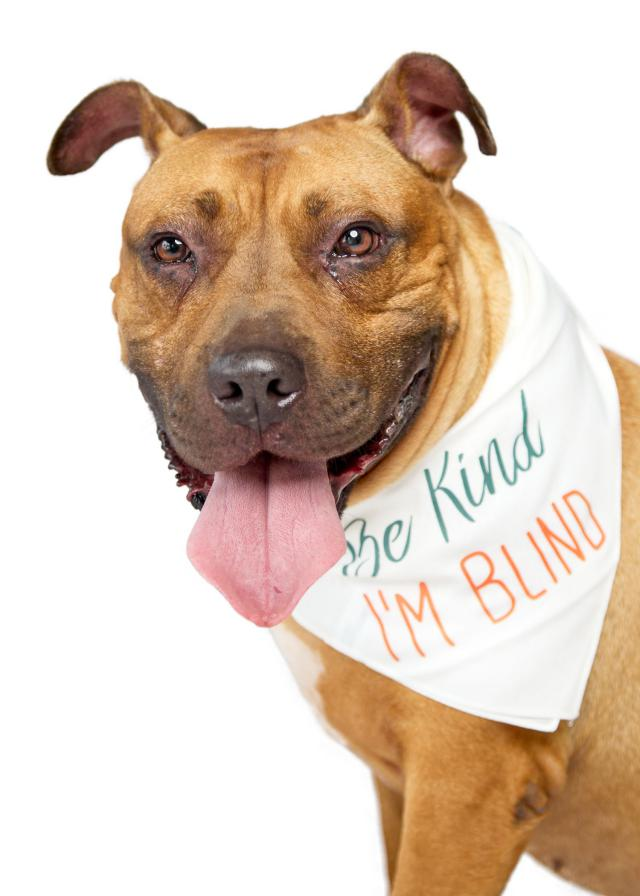
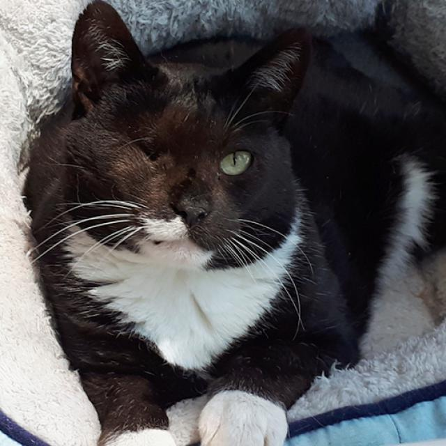
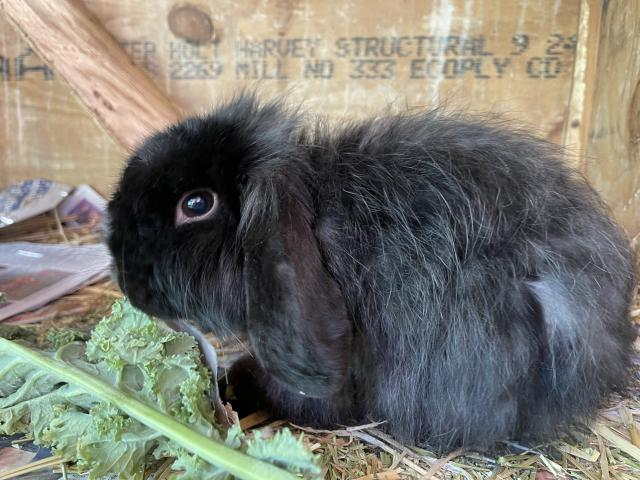

Adopt a Pet from DoggieRescue.com
We are a no-kill shelter, rescuing and re-homing abandoned dogs from death row in Sydney's pounds
- Dogs: 20,123
- Cats: 1,234
- Other Animals: 345
We are a no-kill shelter, rescuing and re-homing abandoned dogs from death row in Sydney's pounds
We are a charitable organisation and we rely very much on volunteers to manage our adoptions. For that reason, we don't always have people available to handle adoptions unless you make an appointment. You can do so by giving us a call at 02 9486 3133 or sending us an email through our emails, listed on the Contact Us page. We try and handle most of the initial adoption enquiries by phone and email before we make an appointment for you to meet some of our animals.
For more information on the adoption process, check out our Adoption Process page.
 Winston is a very sweet but worried boy who has not experienced much outside his backyard in his former life. He is such a sweet easy dog who lets you do anything to him. He would be best in a home with another playful dog who can be his eyes.
 Ariel has a dark brown and white coat with a solid 6kg build. A shy guy that does enjoy a brush and pat once he gets his swipes and hisses out of the way. He is over 8 years old, gets on well with other cats and enjoys lounging about. He comes desexed, wormed, F3 vaccinated and is a healthy FIV positive cat.
 Jet is a young adult Angora X rabbit who came from the pound in a very matted state and underweight. He is a gentle sweet boy who is easy to handle and looking for an owner who likes and is experienced at brushing rabbits. He weighs 1.22kg. Jet is desexed, vaccinated and microchipped.